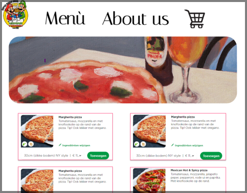
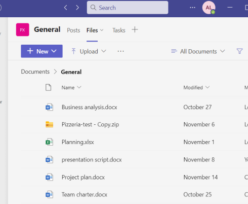

The Portfolio
LEARNING OUTCOMES
Professional Skills
Future-oriented organisation
For the Pizzeria Project we had to seriously make a project plan where we could separate the tasks and plan the timing of everything very neatly. Not
only for us but for the teachers too so that they could understand what we are doing and how fast we we’re planning to handle the tasks. We made sure everyone was in agreement with what we chose to do and made sure to keep updating each other to work without as many complications as possible. We used Trello and Teams to follow our “To do List” but as it was our first time working in a more serious group project we had ups and downs. Especially with splitting tasks we wanted everyone to be comfortable with the job that they got.


Investigative problem solving
When it comes to any project if there is something I didn’t understand I make sure to ask so that process can as flawless as possible. If it was on how to use Flex or Grid in CSS, loops in Python or asking classmates how they are executing their assignment. Asking can help clear out any doubt that someone may have and can also improve your project by getting feedback at the same time.
Personal Leadership
At the start of the orientation phase there was a lot of times where I felt the need to take initiative and dedicate more time on school. I felt behind in the coding department, so I tried doing all the assignments ask for feedback, look up videos that could help me when i got stuck.
Getting stuck would happen normally. Being Creative or different is always on my mind. Feedback for me is very important. In fact the outcome of this website was possible through all the feedback that I recieved.
Targeted Interaction
When it comes to group projects roles for everybody in the group is very important. I found myself being the leader at times where i had to give out tasks to my teammates or for example the Pizzeria Project and Fontyfit I was the one who came up with the design idea. Communication is really important when you are the one deciding the important decisions. You want to make sure everyone understands the concept and know their tasks to the project.